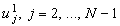

|
1.2. Метод решения явной разностной схемы
Выразим из разностной схемы (4.2) величину  : :
Значения для любого j могут быть определены с помощью аппроксимации начального
условия (4.3). Если задать n = 0, то, пользуясь выражением (4.4), можно определить
значения . Значения определяются с помощью аппроксимации граничных условий (4.3).
Далее, задаём n = 1 и из выражения (4.4) определяем , а значения - опять же с помощью
аппроксимации граничных условий (4.3) и т. д. Таким образом, соотношение (4.4) позволяет
рассчитать все значения искомой функции u в узлах разностной сетки, кроме значений,
задаваемых с помощью начального и граничных условий. Описанную методику решения
явной разностной схемы наглядно характеризует её разностный шаблон (см. рисунок),
на котором n-й шаг по времени следует считать известным, а (n + 1)-й шаг по времени -
искомым.
Соотношения типа (4.4), позволяющие
рассчитывать значения искомой функции u в узлах разностной сетки через
известные значения функции u в других (как правило, соседних) узлах разностной сетки,
называют рекуррентными соотношениями.
Обратим внимание, что если вместо
граничных условий 1-го рода (4.1) будут заданы граничные условия 2-го или 3-го рода,
то расчёт значений несколько усложняется.
Рассмотрим граничные условия 2-го рода:
Запишем их аппроксимацию:
Выразим значения :
Рассмотрим граничные условия 3-го рода:
Запишем их аппроксимацию:
Выразим значения :
|